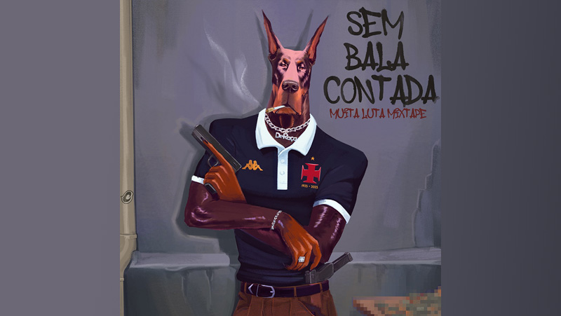
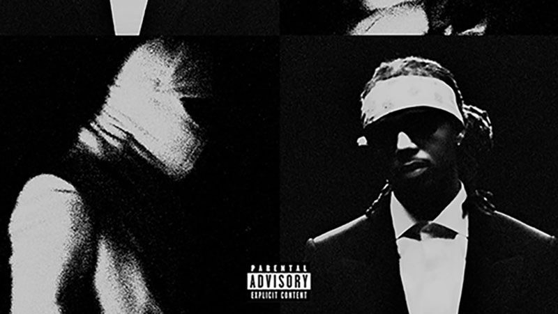
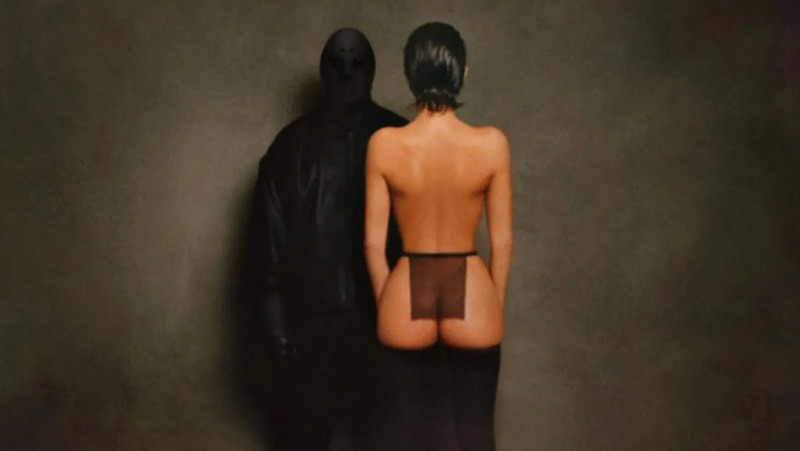

NOVIDADES
BIG BLAKK
SEM BALA CONTADA PROD. PEDRO APOEMA, É A PRIMEIRA MÚSICA DE SEU PROXIMO PROJETO: ERREJOTACULTDRILL Vol. 3 - MUITA LUTA MIX TAPE.
FUTURE & METRO BOOMIN
APÓS O LANÇAMENTO DE WE DON'T TRUST YOU, A SEGUNDA PARTE DO ÁLBUM WE STILL DON'T TRUST YOU, É OFICIALMENTE LANÇADO
EM ALTA
YE & TY DOLLA SING
CARNIVAL, MÚSICA DO ÁLBUM VULTURES 1, É UM VERDADEIRO HIT E ESTÁ PRESENTE NO TOP CHARTS DESDE DE SEU LANÇAMETO.